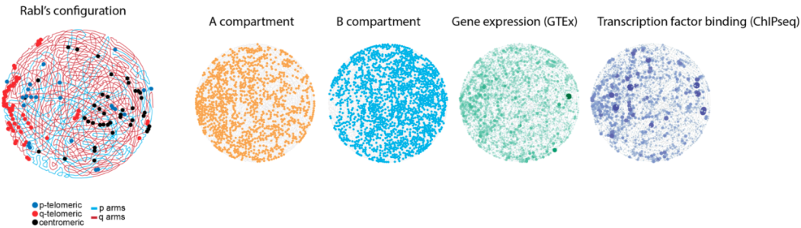

I build scalable machine learning systems to model complex biological systems, integrating multi-omics data and graph-based approaches to uncover structure in high-dimensional biological networks and generate meaningful biological insight.
A scalable machine learning and statistical framework for identifying significant chromosomal interactions from Hi-C data and revealing global patterns of genome organization. SIGNATURE was the first method to systematically model both cis and trans interactions genome-wide, representing the genome as a weighted graph and applying community detection to uncover topological structure. Led to a first-author publication in Nature Communications.
Read more →An ongoing deep learning project that moves from descriptive topology mapping to predictive, condition-aware modeling of the 3D genome. A multi-task graph convolutional network is trained on Hi-C-derived graph structure with biological node features. It jointly predicts disease status, tissue type, and sex. This enables the model to learn how the genome reorganizes under different biological conditions. Unlike SIGNATURE, which maps genome topology, this project asks whether those structural changes can be learned for prediction.
Read more →A massively parallel, cloud-based extension of SIGNATURE designed for ultra-high-resolution contact analysis. Processes ~7,500 human and ~7,000 cross-species Hi-C datasets at 10 kb resolution across more than 200 TB of raw data — achieving a 99% reduction in runtime via distributed AWS pipelines. A significant scientific computing and scalable ML systems achievement.
Developed optimization-based and matrix factorization ML frameworks to identify miRNA–mRNA regulatory modules across 9,000+ tumor samples spanning 32 TCGA cancer types. A multi-task learning extension captured tissue-specific and cancer-specific regulatory programs, validated through enrichment and survival analyses.
The question: How is the human genome organized in 3D space, and what patterns govern long-range interactions between chromosomes?
Previous methods largely focused on local intra-chromosomal (cis) contacts. Global inter-chromosomal organization remained poorly understood — Hi-C data is inherently sparse and noisy, and no existing tool was designed for genome-wide cis + trans all-vs-all modeling.
What made SIGNATURE novel: it was the first framework to jointly model cis and trans contacts genome-wide using a supervised statistical approach, then represent the genome as a weighted graph and apply community detection to decompose it into interpretable structural regions.

The question: How does the 3D organization of the genome change in disease — and can those changes be learned by a model?
Genome organization varies systematically across healthy vs. disease states, tissues, and sex. The challenge is to model these changes in a predictive, condition-aware framework rather than simply mapping static topology.
This project trains a multi-task graph convolutional network using Hi-C-derived graph structure with biological node features, producing genome-level embeddings and classifiers for disease status, tissue type, and sex.
Note: This project is distinct from SIGNATURE. SIGNATURE focused on identifying and mapping genome-wide 3D topology. This GNN work focuses on disease-related reorganization and predictive modeling.
Representing genomes and regulatory networks as graphs to learn structured, topology-aware representations of biological systems.
Combining Hi-C, RNA-seq, and other omics layers into unified representations that capture complementary biological signals.
Building distributed AWS and HPC pipelines capable of processing 200+ TB of raw genomic data with dramatic efficiency gains.
Embedding biological priors and domain structure into ML models to produce interpretable, biologically meaningful insights.
I am a Machine Learning Scientist at SickKids Research Institute in Toronto, where I develop scalable AI and statistical frameworks for modeling biological systems from large-scale genomic data. My work focuses on graph-based modeling of genome organization, multi-omics integration, and machine learning methods that uncover hidden structure in complex biological systems.
I bring strong technical leadership and mentorship experience, working across disciplines with scientists, engineers, and clinicians. I have led collaborative projects, mentored researchers, and communicated technical ideas to diverse audiences through publications, invited talks, and interdisciplinary research initiatives.
More broadly, I am interested in building knowledge-driven AI systems that bridge genome structure and function and enable biologically meaningful, data-driven discovery — with direct relevance to precision medicine, disease biology, and the next generation of biotech applications.
I am open to conversations in machine learning, computational biology, and AI-driven discovery. Toronto-based. Open to industry roles in biotech, pharma AI, and computational biology.
Open to conversations in machine learning, computational biology, and AI-driven discovery.
milad.mokhtari.ie@gmail.com